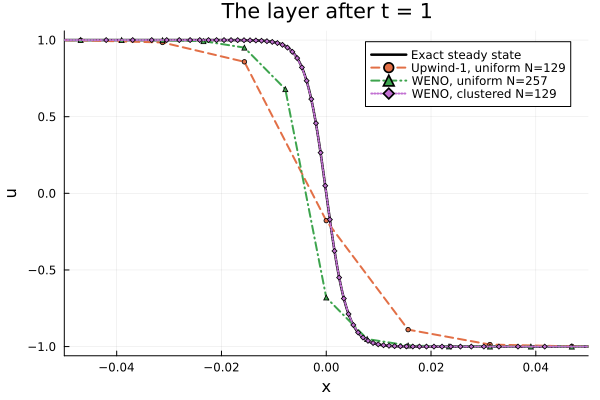
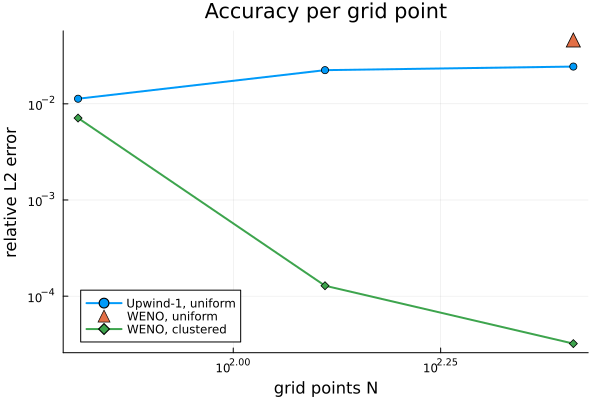
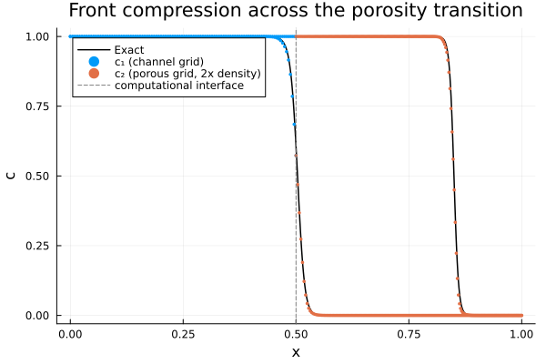

Showcase: Resolving Interfacial Gradients with Non-Uniform WENO
Electrochemical devices are full of thin regions where the solution changes violently: concentration boundary layers at electrode/separator interfaces in lithium-ion cells, reaction fronts pumped through the porous electrodes of redox flow batteries. Resolving such a layer on a uniform grid means paying for that resolution everywhere — the classic argument for finite-volume codes with local refinement. This page shows that the combination of WENOScheme and non-uniform rectilinear grids brings the same capability to MethodOfLines' finite-difference framework, and validates it quantitatively against exact solutions.
Two test problems, in increasing structural complexity:
- A stationary viscous shock — a steep interior layer at a known, fixed location, with an exact steady solution. The showcase for accuracy per grid point.
- A steep front crossing a two-domain interface into a porous region — the front compresses as the medium slows it down, so the two computational domains genuinely need different grids. The showcase for the multi-domain interface machinery on mismatched non-uniform grids.
Both are advection-dominated problems with steep-but-smooth profiles. That is deliberate: the WENO discretization in MethodOfLines is non-conservative (it reconstructs $\partial_x u$ directly rather than a flux difference), and non-conservative schemes are known to propagate genuine discontinuities at slightly wrong speeds over long times (Hou & LeFloch, 1994). Viscous or inlet-signal regularization keeps the problems both physically meaningful and within the regime where the scheme's formal accuracy applies. See Limitations below.
Part A: the stationary viscous shock
The viscous Burgers equation
\[\frac{\partial u}{\partial t} + u \frac{\partial u}{\partial x} = \nu \frac{\partial^2 u}{\partial x^2}, \qquad x \in [-1, 1], \qquad u(t, \mp 1) = \pm 1,\]
balances nonlinear steepening against diffusion and admits the exact steady state
\[u_\infty(x) = -\tanh\left(\frac{x}{2\nu}\right),\]
an interior layer of width $O(\nu)$ pinned at $x = 0$ — the finite-difference prototype of a steep interfacial gradient. With $\nu = 2 \times 10^{-3}$ the layer is $\sim 0.01$ wide: a uniform grid needs thousands of points to see it, yet 98% of those points sit in regions where the solution is essentially constant.
The test protocol: start from the exact steady state and integrate to $t = 1$. Sampled on a grid, $u_\infty$ is a steady state of the PDE but not of the discretized system: any discretization — upwind or WENO, uniform or clustered — has its own discrete steady state, displaced from $u_\infty$ by its spatial truncation error, and the numerical solution drifts toward it, smearing the layer, shifting it, or oscillating around it. The error against $u_\infty$ at $t = 1$ measures exactly this drift: a pure spatial-accuracy metric. (Starting from a smeared initial profile instead would measure the metastable, $O(e^{c/\nu})$-slow layer relaxation of viscous Burgers — a property of the physics, not of the discretization.)
using ModelingToolkit, MethodOfLines, OrdinaryDiffEq, DomainSets, Plots
using OrdinaryDiffEqSSPRK: SSPRK33
@parameters t x
@variables u(..)
Dt = Differential(t)
Dx = Differential(x)
ν = 2.0e-3
u_steady(x) = -tanh(x / (2ν))
T_END = 1.0
function shock_prob(gridspec, scheme)
eq = Dt(u(t, x)) ~ -u(t, x) * Dx(u(t, x)) + ν * Dx(Dx(u(t, x)))
bcs = [u(0.0, x) ~ u_steady(x),
u(t, -1.0) ~ 1.0,
u(t, 1.0) ~ -1.0]
domains = [t ∈ Interval(0.0, T_END), x ∈ Interval(-1.0, 1.0)]
@named pdesys = PDESystem(eq, bcs, domains, [t, x], [u(t, x)])
disc = MOLFiniteDifference([x => gridspec], t; advection_scheme = scheme)
sys, tspan = symbolic_discretize(pdesys, disc)
return ODEProblem(mtkcompile(sys), nothing, tspan)
endGrid engineering: a resolution density
As in the non-uniform WENO tutorial, we build the grid from a resolution density $\rho(x) > 0$ by placing points at uniform quantiles of its normalized cumulative integral — here with the inverse CDF evaluated by interpolation, so that cell widths vary smoothly (snapping to a sampling lattice would inject jitter that caps the observable convergence order):
function grid_from_density(a, b, n, ρ; nsamples = 5001)
xs = range(a, b, length = nsamples)
cdf = cumsum(ρ.(xs))
cdf = (cdf .- cdf[1]) ./ (cdf[end] - cdf[1])
xg = map(range(0, 1, length = n)) do l
k = searchsortedfirst(cdf, l)
k <= 1 && return float(xs[1])
θ = (l - cdf[k - 1]) / (cdf[k] - cdf[k - 1])
return xs[k - 1] + θ * (xs[k] - xs[k - 1])
end
xg[1] = a
xg[end] = b
return xg
end
# 31x resolution boost in a Gaussian bump spanning the O(ν) layer.
cluster_density(x) = 1 + 30 * exp(-x^2 / (2 * 0.02^2))
clustered_grid(n) = grid_from_density(-1.0, 1.0, n, cluster_density)The one-line density above encodes the entire grid design, so let's spell out the three choices in it:
- Where: at the layer, whose location is known a priori. The antisymmetric boundary conditions pin the layer's zero crossing at $x = 0$, so the bump is centered there. This is static grid design exploiting known solution structure — the same information available for, say, an electrode/separator interface at a fixed position — not adaptivity: if the feature moved, this grid would not follow it.
- How wide: a small multiple of the layer width. The Gaussian width $\sigma = 0.02$ covers the layer ($|u_\infty| < 0.99$ only for $|x| < 0.011$) with margin on both sides. A Gaussian profile rather than a top-hat keeps $\rho$ smooth, so adjacent cell widths vary gradually — the non-uniform reconstruction is high-order accurate for smoothly varying spacing and would lose accuracy across abrupt jumps in spacing.
- How much: enough points across the layer. The amplitude 30 sets a $31\times$ peak-to-far-field density contrast. At $N = 129$ this places the smallest cell ($\approx 8.8 \times 10^{-4}$, $18\times$ finer than the uniform $\Delta x = 2/128$) at the layer center and $\sim 25$ of the 129 points across the layer, while the far field coarsens only to $\approx 2.7 \times 10^{-2}$ — resolution the exponentially flat tails do not need.
The design rule generalizes, and Part B applies it again: make $\rho$ proportional to the inverse of the local feature width — large where the solution varies steeply, $\approx 1$ where it is flat — and let the cumulative-integral construction place the points.
Holding the layer
We integrate with the SSP integrator SSPRK33; the fixed step obeys both the advective and the diffusive stability limit of the smallest cell. The weighted relative $L^2$ error against $u_\infty$ is the figure of merit:
ssp_dt(dxmin) = 0.2 * min(dxmin, dxmin^2 / (2ν))
grid_min(spec) = spec isa Number ? spec : minimum(diff(spec))
function shock_error(gridspec, scheme)
prob = shock_prob(gridspec, scheme)
sol = solve(prob, SSPRK33(); dt = ssp_dt(grid_min(gridspec)),
adaptive = false, saveat = [T_END])
xs = sol[x]
uend = sol[u(t, x)][end, :]
w = [diff(xs); xs[end] - xs[end - 1]]
err = sqrt(sum(w .* abs2.(uend .- u_steady.(xs))) / sum(w .* abs2.(u_steady.(xs))))
return xs, uend, err
end
xs_up, u_up, err_up = shock_error(2.0 / 128, UpwindScheme())
xs_clu, u_clu, err_clu = shock_error(clustered_grid(129), WENOScheme())
xs_uni, u_uni, err_uni = shock_error(2.0 / 256, WENOScheme())
println("Upwind-1, uniform N=129: err = ", round(err_up, sigdigits = 3))
println("WENO, uniform N=257: err = ", round(err_uni, sigdigits = 3))
println("WENO, clustered N=129: err = ", round(err_clu, sigdigits = 3))┌ Warning: Solution has length 1 in dimension t. Interpolation will not be possible for variable u(t, x). Solution return code is Success.
└ @ MethodOfLines ~/_work/MethodOfLines.jl/MethodOfLines.jl/src/interface/solution/solution_utils.jl:23
┌ Warning: Solution has length 1 in dimension t. Interpolation will not be possible for variable u(t, x). Solution return code is Success.
└ @ MethodOfLines ~/_work/MethodOfLines.jl/MethodOfLines.jl/src/interface/solution/solution_utils.jl:23
┌ Warning: Solution has length 1 in dimension t. Interpolation will not be possible for variable u(t, x). Solution return code is Success.
└ @ MethodOfLines ~/_work/MethodOfLines.jl/MethodOfLines.jl/src/interface/solution/solution_utils.jl:23
Upwind-1, uniform N=129: err = 0.0224
WENO, uniform N=257: err = 0.0461
WENO, clustered N=129: err = 0.000128The same information, zoomed into the layer:
xfine = range(-0.05, 0.05, length = 500)
plt = plot(xfine, u_steady.(xfine); label = "Exact steady state", color = :black,
lw = 2.5, xlabel = "x", ylabel = "u", xlims = (-0.05, 0.05),
legend = :topright, title = "The layer after t = 1")
plot!(plt, xs_up, u_up; label = "Upwind-1, uniform N=129", lw = 2, ls = :dash,
marker = :circle, ms = 2.5)
plot!(plt, xs_uni, u_uni; label = "WENO, uniform N=257", lw = 2, ls = :dashdot,
marker = :utriangle, ms = 2.5)
plot!(plt, xs_clu, u_clu; label = "WENO, clustered N=129", lw = 2, ls = :dot,
marker = :diamond, ms = 2.5)
Three regimes, one picture:
- First-order upwind replaces the physical viscosity $\nu$ with its own numerical viscosity $\sim u\,\Delta x / 2 \approx 8 \times 10^{-3} \gg \nu$ and relaxes the layer to the corresponding wrong width.
- Uniform WENO at N=257 barely fits the layer into one cell. It stays non-oscillatory (the WENO weights see the layer as a near-discontinuity), but accuracy is limited — and on the N=129 uniform grid the sub-cell layer is not even stable to integrate. Under-resolution is not a small-error regime; it is a failure regime.
- Clustered WENO at N=129 — the same scheme and point budget as the failing uniform $N = 129$ run, with the points redistributed by the density engineered above — resolves the layer with the $\sim 25$ points placed across it and holds it to a relative error of $\sim 10^{-4}$ — two orders of magnitude better than the uniform grid with twice the points, with the largest overshoot at the $10^{-8}$ level. The gain is attributable entirely to point placement.
Error versus degrees of freedom
The clustered grids form a self-similar family, so refining them measures convergence:
Ns = [65, 129, 257]
errs_clu = [shock_error(clustered_grid(n), WENOScheme())[3] for n in Ns]
errs_up = [shock_error(2.0 / (n - 1), UpwindScheme())[3] for n in Ns]
plt = plot(; xscale = :log10, yscale = :log10, xlabel = "grid points N",
ylabel = "relative L2 error", legend = :bottomleft,
title = "Accuracy per grid point")
plot!(plt, Ns, errs_up; label = "Upwind-1, uniform", marker = :circle, lw = 2)
scatter!(plt, [257], [err_uni]; label = "WENO, uniform", marker = :utriangle, ms = 7)
plot!(plt, Ns, errs_clu; label = "WENO, clustered", marker = :diamond, lw = 2)
At $N = 129$ the clustered WENO error is roughly two to three orders of magnitude below both alternatives. Note that the upwind curve does not converge at all in this range — its numerical viscosity $u\,\Delta x / 2$ exceeds the physical $\nu$ until $N \gtrsim 1000$, so every one of these grids relaxes to a layer of the wrong width. Equivalently: to match the clustered-grid error, the uniform approaches would need thousands of points — this is the value proposition of non-uniform WENO in one plot.
Part B: a front crossing into a porous region
Now the multi-domain machinery. In a redox flow battery, electrolyte is pumped from an open channel into a porous electrode; the interstitial velocity drops as the porosity does, and any concentration front carried by the flow compresses as it crosses the transition. We model the along-flow transport of such a front:
\[\frac{\partial c_k}{\partial t} = -v(x) \frac{\partial c_k}{\partial x}, \qquad c_1 \text{ on } [0, \tfrac12], \quad c_2 \text{ on } [\tfrac12, 1], \qquad c_1(t, \tfrac12) = c_2(t, \tfrac12),\]
where the slowness $s = 1/v$ ramps smoothly from 1 to $1/v_2 = 2$ across a porosity transition of width $\delta_v$ centered at $x_v$ just downstream of the computational interface:
\[s(x) = 1 + \left(\frac{1}{v_2} - 1\right) \frac{1 + \tanh((x - x_v)/\delta_v)}{2}.\]
The exact solution is a travel-time shift of the inlet signal $S$: with $\tau(x) = \int_0^x s(\xi)\, d\xi$ (closed form for the tanh ramp),
\[c(x, t) = S(t - \tau(x)), \qquad S(\sigma) = \frac{1 + \tanh((\sigma - t_0)/w_t)}{2}.\]
A front of temporal width $w_t$ has spatial width $v(x)\, w_t$: it enters at width $0.02$ and leaves the transition at width $0.01$, permanently. Domain 2 therefore carries finer features than domain 1 everywhere — exactly the situation per-domain non-uniform grids exist for. And there is a natural grid design rule: equidistribute cells against the local feature width, i.e. take the resolution density proportional to $s(x)$ itself.
Two things about the formulation deserve emphasis, both learned by testing:
- The interface here is purely computational. The medium is one continuous field $v(x)$; the domain is split at $x = 1/2$ only to demonstrate that a domain can be split, with independently designed grids on each side, without losing accuracy at the seam.
- The velocity must be continuous across the seam. The cross-seam WENO stencil continuation assumes a single advection field; a genuine velocity jump at the interface destabilizes it. Steep coefficient variation on marginally resolving grids is similarly fragile — see Limitations.
@parameters x1 x2
@variables c1(..) c2(..)
Dx1 = Differential(x1)
Dx2 = Differential(x2)
v2 = 0.5 # deep slow-region speed
xv = 0.55 # porosity-transition center (inside domain 2)
δv = 0.1 # transition width
w_t = 0.02 # temporal front width: spatial width 0.02 → 0.01
t0 = 0.15
T_MID = 0.67 # front center at the seam
T_B = 1.3 # front center at x ≈ 0.85
s_slowness(x) = 1 + (1 / v2 - 1) * 0.5 * (1 + tanh((x - xv) / δv))
Lc(x) = log(cosh((x - xv) / δv))
τ(x) = x + (1 / v2 - 1) * 0.5 * ((x + δv * Lc(x)) - δv * Lc(0.0))
S(σ) = 0.5 * (1 + tanh((σ - t0) / w_t))
c_exact(x, t) = S(t - τ(x))
function front_prob(g1, g2)
eqs = [Dt(c1(t, x1)) ~ -(1 / s_slowness(x1)) * Dx1(c1(t, x1)),
Dt(c2(t, x2)) ~ -(1 / s_slowness(x2)) * Dx2(c2(t, x2))]
bcs = [c1(0, x1) ~ c_exact(x1, 0.0),
c2(0, x2) ~ c_exact(x2, 0.0),
c1(t, 0.0) ~ S(t),
c1(t, 0.5) ~ c2(t, 0.5),
Dx2(c2(t, 1.0)) ~ 0.0]
domains = [t ∈ Interval(0.0, T_B),
x1 ∈ Interval(0.0, 0.5),
x2 ∈ Interval(0.5, 1.0)]
@named pdesys = PDESystem(eqs, bcs, domains, [t, x1, x2],
[c1(t, x1), c2(t, x2)])
disc = MOLFiniteDifference([x1 => g1, x2 => g2], t;
advection_scheme = WENOScheme())
sys, tspan = symbolic_discretize(pdesys, disc)
return ODEProblem(mtkcompile(sys), nothing, tspan)
end
# ρ ∝ s: domain 2 gets ~2x the density; grids are deliberately mismatched at the seam.
g1 = grid_from_density(0.0, 0.5, 101, s_slowness)
g2 = grid_from_density(0.5, 1.0, 201, s_slowness)
prob = front_prob(g1, g2)
sol = solve(prob, Tsit5(); abstol = 1.0e-8, reltol = 1.0e-8, saveat = [T_MID, T_B])┌ Warning: The system contains interface boundaries, which are not compatible with system transformation. The system will not be transformed. Please post an issue if you need this feature.
└ @ MethodOfLines ~/_work/MethodOfLines.jl/MethodOfLines.jl/src/system_parsing/pde_system_transformation.jl:55xs1, xs2 = sol[x1], sol[x2]
c1s, c2s = sol[c1(t, x1)], sol[c2(t, x2)]
plt = plot(; xlabel = "x", ylabel = "c", legend = :topleft,
title = "Front compression across the porosity transition")
xfine1 = range(0, 0.5, length = 400)
xfine2 = range(0.5, 1, length = 400)
for (k, T) in enumerate(sol[t])
plot!(plt, [xfine1; xfine2], c_exact.([xfine1; xfine2], T);
color = :black, lw = 1.5, label = k == 1 ? "Exact" : nothing)
scatter!(plt, xs1, c1s[k, :]; ms = 2, msw = 0, color = 1,
label = k == 1 ? "c₁ (channel grid)" : nothing)
scatter!(plt, xs2, c2s[k, :]; ms = 2, msw = 0, color = 2,
label = k == 1 ? "c₂ (porous grid, 2x density)" : nothing)
end
vline!(plt, [0.5]; color = :gray, ls = :dash, label = "computational interface")
plt
The front arrives at the seam at $t \approx 0.67$ steep, crosses it onto a different, finer grid without a visible kink, and emerges at $t = 1.3$ twice as steep. Quantitatively (from the accompanying regression test in test/Convection_WENO/MOL_1D_WENO_NU_Interface.jl):
- the seam is exactly continuous — the interface identification is algebraic, so $|c_1 - c_2|$ at the seam is at machine precision;
- the solution stays in $[0, 1]$ up to $10^{-3}$ while the steep front crosses grids;
- against the exact characteristic solution, the mismatched non-uniform pair beats an evenly split uniform pair with the same total number of points;
- under co-refinement of both grids, the error converges at the expected high order (formally 4th for the non-uniform reconstruction) with no order loss at the seam.
Scope and limitations
Honesty about where the current infrastructure ends is part of the showcase:
- Non-conservative form.
WENOSchemereconstructs $\partial_x u$ directly. For steep-but-smooth solutions (as here) this is the right tool; for genuine long-time shock propagation, non-conservative finite differences converge to solutions with slightly wrong shock speeds (Hou & LeFloch, 1994). Do not use this setup as a shock-tube solver. - Formal order. The non-uniform reconstruction is formally 4th-order in smooth regions (the uniform scalar-
dxpath is 5th). Strongly stretched grids are pre-asymptotic at moderate resolutions. - Under-resolution is a failure regime. A layer that fits inside one cell is not merely inaccurate — it can render the semi-discretization unstable (the uniform $N = 129$ run of Part A aborts). The same applies to advection coefficients that vary steeply on the grid scale: keep $v(x)$ resolved, and keep it continuous across interfaces.
- Mismatched-grid interfaces support first-order derivatives only. Diffusion across a mismatched non-uniform interface is rejected at discretization time. Part A therefore mixes WENO advection with centered diffusion on a single domain, while Part B keeps the multi-domain problem purely advective.
- Explicit time stepping is limited by the smallest cell (advective and diffusive limits); the reported errors were cross-checked between the fixed-step SSP integrator and adaptive integrators to confirm they are spatial.
References
- G.-S. Jiang and C.-W. Shu, Efficient Implementation of Weighted ENO Schemes, Journal of Computational Physics 126 (1996).
- J. Shi, C. Hu, C.-W. Shu, A technique of treating negative weights in WENO schemes, Journal of Computational Physics 175 (2002).
- B. Fornberg, Generation of finite difference formulas on arbitrarily spaced grids, Mathematics of Computation 51 (1988).
- T. Y. Hou and P. G. LeFloch, Why nonconservative schemes converge to wrong solutions: error analysis, Mathematics of Computation 62 (1994).
- R. Wang and R. J. Spiteri, Observations on the fifth-order WENO method with non-uniform meshes, Applied Mathematics and Computation 196 (2008).